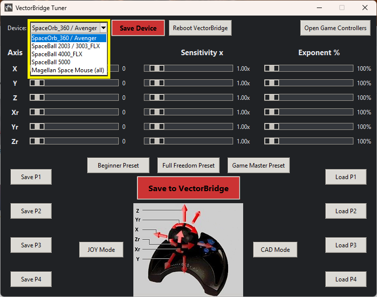

VectorBridge Software
Two included Windows apps show the real value of VectorBridge: the Tuner that writes your settings to the adapter’s NVM, and the Mouse&Keyboard Feeder that makes classic 6‑DoF controllers feel at home in modern games.
Tuner — Device selection (SpaceOrb 360)

Tuner highlights
- Choose from supported devices (e.g., SpaceOrb 360, SpaceBall series, Magellan Classic/Plus)
- Adjust sensitivity, dead-zones, and response curves
- Writes to VectorBridge’s onboard storage — settings travel with your VectorBridge
- Starter profiles let you begin quickly; refine with sliders
- Windows 10/11

Included with every VectorBridge
Tuner and Mouse&Keyboard Feeder are part of the package — no extra purchase required.